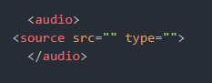
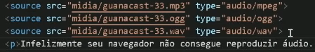

Neste exercício iremos aprender a criar imagens que são capazes de se adaptar a formatos de telas diferentes. Tente abrir este site em vários dispositivos diferentes.
O source funciona da maior pra menor, no código você vai ir pondo a imagem menor sempre acima.
Aqui utilizamos a tag "picture" para adicionar a imagem á página, colocamos a imagem grande mas há uma limitação, se o usuário utilizar uma tela pequena ele nãop conseguirá ver a imagem toda, para contornar esse problema utilizamos
source media="(max-width: 1050px)" srcset= "imagem/foto-m.png" type="image/png"
A seguir veremos como adicionar mídias em nossa página.
Bem, a maneira mais simples de por um aúdio é usando a tag "audio src="", pondo o audio escolhido dentro das aspas e inserindo em seguinda o comando "controls autoplay", o controls seria para mostrar o controlador de audio, o autoplay é para que o audio fique dispónível para reprodução..
É bom se atentar aos tipos de navegadores compatíveis com mp3, ou existem outros formatos de arquivo como o WAV e OGG, é sempre bom ter o mesmo áudio nos 3 formatos, para o caso de alguma tag ser invalidada como aconteceu com o autoplay acima. Mas existe outra forma de adicionar um áudio a sua página.
Clique aqui para fazer dowload do arquivo mp3
A outra maneira seria abrindo a tag audio e tirando o src dela, entre o audio e o /audio você vai digitar "source src" e vai abrir o comando com o "type=""" aí você escolhe o arquivo pro src e especifica no type com base no tipo de aúdio (Ce tem que estudar isso).
Oque você pode e deve fazer nestes casos é por os demais formatos, por que caso um nãop seja reproduzido o navegador tentará o outro, se por ventura nenhum tocar então é foda, e vai ficar por isso mesmo.
Para quem desenvolve o ideal é ter sempre mais de um formato de vídeo, como estes abaixo.
Neste momento seria utilizado o HandBreack para fazer a conversão de um arquivo para o outro, porém o mesmo não está baixando.